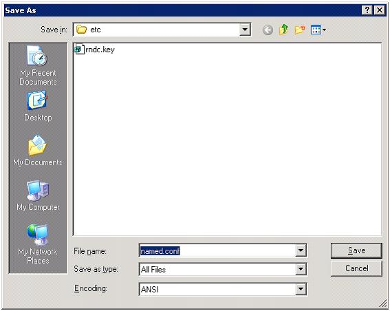

ICS BIND DNS Server Installation and Configuration
Translations:
1. Please download and unzip BIND9.x.zip installation package http://www.isc.org/index.pl?/sw/bind/index.php
2. Create "BIND" folder on your system or other drive C:\BIND
3. Run "BINDInstall.exe" installation package
Please note: (copied from C:\BIND\dns\bin\readme1st.txt)
The installer will prompt you for an account name.
The default name is "named", and blank password for that account. It will also check for the existence
of that account. If it does not exist is will create it with only the privileges required to run BIND. If the account does exist it will check that it has only the one privilege required: "Log on as a service". If it has too many privileges it will prompt you if you want to continue.
For additional information how to configure BIND DNS Server please open C:\BIND\dns\bin\readme1st.txt or http://www.isc.org/index.pl?/sw/bind/index.php
4. Specify installation directory. Account name and password required for running BIND Server
For example "Bind_ServiceAccount" ISC BIND Service Account
5. Press install button
6. Create BIND Configuration File:
Under "c:\BIND\dns\etc\" folder please create blank "named.conf" configuration file

7. Create BIND .Key File
From the command line:
>>cd C:\BIND\dns\bin
>> rndc-confgen -a
Please note: (copied from C:\BIND\dns\bin\readme1st.txt)
Which will create a rndc.key file in the dns/etc directory. This will allow you to run rndc without an explicit rndc.conf file or key and control entry in named.conf file
8. Start "ISC BIND" service
9. Check membership and permission for ISC BIND Service Account
By default Bind Service Account will be a member of "Domain Users" or "Users" group.
Please note: (Some information was copied from C:\BIND\dns\bin\readme1st.txt)
After please check that the account has full access to C:\BIND folder where located the pid file, any files that are maintained either for slave zones or for master zones supporting dynamic updates.
10. Create the "Zones" folder where BIND DNS Server will be stored all information about added zones "C:\BIND\dns\zones"
11. BIND Configuration in the WSP Control Panel
From the panel In the "BindDNS" Service configuration:
11.1. Change Zone File Name Template to show full path to zones file, e.g. "C:\BIND\dns\zones\db.[domain_name].txt"
11.2. Created file C:\BIND\dns\bin\zonereload.bat with "c:/BIND/dns/bin/rndc.exe reload" command inside it. This file set at "Bind Reload Batch" in WSP and also scheduled to run every 10 minutes in Windows Task Scheduler.
12. For additional information how to configure BIND DNS Server please open C:\BIND\dns\bin\readme1st.txt or http://www.isc.org/index.pl?/sw/bind/index.php